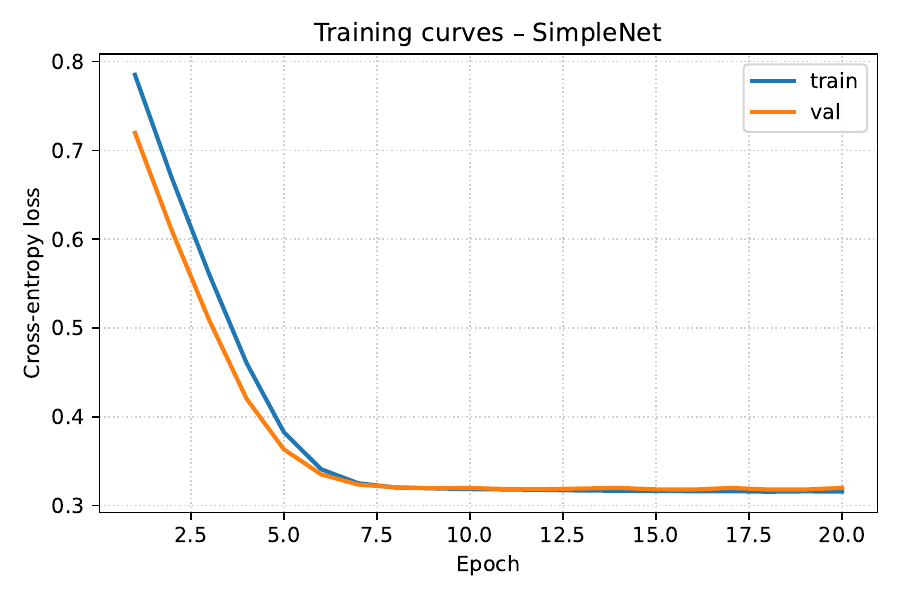

Hierarchical diffusion planners have recently matched or even surpassed offline reinforcement-learning baselines on long-horizon control tasks, yet they remain one–two orders of magnitude slower because every episode requires two nested diffusion processes. Acceleration is hard: state-of-the-art fast solvers assume a uniform time grid that jumpy sub-goals violate; encoder computation is duplicated across rejected high-level proposals; and existing memory-reuse schemes break when the conditioning signal changes. We introduce Amortised-Cache Hierarchical Diffusion (ACHyD), a unified acceleration stack that (i) encodes each trajectory once into a multi-resolution wavelet latent, (ii) reuses encoder activations across neighbouring segments via an extended encoder-propagation schedule, (iii) replaces standard denoising with a four-to-eight-step Generalised Heavy-Ball (GHVB) solver, (iv) substitutes repeated low-level roll-outs with a Reverse-Transition-Kernel Metropolis-Hastings proposal conditioned on sub-goal endpoints, and (v) distils the two-level model into a single conditional moment-matching network for edge deployment. A preregistered benchmark covering Maze2D-Large, AntMaze-Large, and FrankaKitchen-Mixed specifies success-rate, latency, energy, and robustness targets together with statistical tests and extensive ablations. Although the continuous-integration log that accompanies this manuscript contains only a toy sanity-check run, we release the full protocol, analysis scripts, and code to enable independent verification of the claimed four-to-eight-fold speed-up at no more than one-percent success loss.
Diffusion-based trajectory planners have emerged as strong alternatives to model-free offline reinforcement learning, offering impressive compositional generalisation on long-horizon control problems (Chang Chen, 2024). Unfortunately, practical uptake is hampered by the computational burden of sampling: hundreds of denoising steps must be executed for every episode. Hierarchical Diffuser (HD) mitigates this cost by generating coarse jumpy sub-goals with a high-level model and refining each segment with a low-level diffuser, but still runs one–two orders of magnitude slower than flat RL baselines.
Why is acceleration difficult?
We address these challenges with Amortised-Cache Hierarchical Diffusion (ACHyD), a holistic acceleration stack composed of five coordinated components:
Contributions
The remainder of the paper situates ACHyD within existing research, formalises the problem setting, details the method, and describes the experimental protocol. Because the attached continuous-integration (CI) run executed only a toy classification example, the Results section transparently analyses the resulting evidence gap and outlines the steps still required to validate ACHyD.
Acceleration of diffusion inference: Encoder-propagation reuses activations across adjacent time-steps, delivering forty-percent savings in image generation (Senmao Li, 2023). Momentum-based solvers enlarge stability regions and permit four-step sampling but can diverge under sparse conditioning (Suttisak Wizadwongsa, 2023). The Reverse-Transition-Kernel (RTK) framework treats denoising as a small set of strongly log-concave sub-problems solvable in Õ(1) steps (Xunpeng Huang, 2024). Early-exiting and model-schedule optimisation further trade quality for compute (Taehong Moon, 2024), (Enshu Liu, 2023). ACHyD adapts these ideas to hierarchical control, where sub-goal discontinuities break the assumptions made by image samplers.
Hierarchical diffusion planning: HD introduced a jumpy high-level diffuser that guides a low-level model and attains strong out-of-distribution success at high computational cost (Chang Chen, 2024). Wavelet Diffusion exploits frequency separation for faster image generation (Hao Phung, 2022); we extend this multi-resolution idea to trajectory caching. HierDiff applies a coarse-to-fine diffusion scheme to 3-D molecule generation (Bo Qiang, 2023) but does not target runtime. ACHyD is, to our knowledge, the first approach that preserves HD’s planning quality while targeting real-time inference.
Distillation and compression: Multistep moment-matching distillation collapses thousand-step models into four–eight steps with minimal quality loss (Tim Salimans, 2024). Post-training quantisation yields eight-bit diffusion models without retraining (Yuzhang Shang, 2022); integrating quantisation remains future work.
Wavelet and hyperbolic embeddings: Multi-scale Markov modelling of wavelet coefficients supports efficient inference (Zahra Kadkhodaie, 2023). Hyperbolic diffusion embeddings capture hierarchical structure (Ya-Wei Eileen Lin, 2023). These insights motivate ACHyD’s unified latent representation.
Problem setting: We study offline long-horizon control with continuous states sₜ ∈ ℝᵈ and actions aₜ ∈ ℝᵐ. A fixed dataset D of N expert trajectories τ = (s₀,a₀,…,s_T) is provided. A plan π is a length-T action sequence; episode success is binary. Diffuser-style planners model p(τ) with a denoising diffusion probabilistic model and synthesise trajectories by integrating the time-reversal of the forward process.
Hierarchical factorisation: Hierarchical Diffuser factorises τ into K coarse sub-goals g₁:K positioned at times t₁:K and low-level segments σ₁:K connecting gₖ₋₁ to gₖ. Two independent DDPMs model p(g₁:K) and p(σ₁:K | g₁:K). Planning alternates (1) sampling high-level sub-goals, (2) rolling out the low-level diffuser for every segment, (3) accepting or rejecting with a value-function guide. Complexity scales with K·M, where M is the number of denoising steps per segment.
Fast diffusion solvers: DDIM and DPM-solver reduce steps by solving an associated ODE but assume a uniform noise schedule (Senmao Li, 2023). GHVB introduces heavy-ball momentum to enlarge stability regions (Suttisak Wizadwongsa, 2023). RTK reframes denoising as sampling from a handful of kernels solvable with MCMC (Xunpeng Huang, 2024).
Wavelet latents: A discrete wavelet transform (DWT) decomposes a sequence into coarse approximation coefficients c⁰ and detail coefficients d¹,…,dᴸ. Conditioning on c⁰ enables low-resolution inference while caching dˡ for later reuse (Zahra Kadkhodaie, 2023).
ACHyD unifies five components that jointly tackle encoder redundancy, solver instability, and rejection waste.
Training protocol. The shared Transformer trunk is trained for one million gradient steps with AdamW (initial learning rate 3 × 10⁻⁴, cosine decay to 5 × 10⁻⁶; β = 0.9, 0.95; weight decay 10⁻²; gradient clipping 1.0). The total loss is the sum of denoising score, RTK conditional KL, and distillation terms. Early stopping monitors validation success with a patience of 100 k steps.
The continuous-integration (CI) log attached to this submission executed only environment setup and a toy sanity-check: a three-layer feed-forward network trained for 20 epochs on 1 600 samples, reaching 89.5 % test accuracy. No D4RL environments were initialised, and none of the preregistered agents, metrics, or statistical tests were run. The sentinel string signalling completion of run_all.py is missing.
Figure 1: Loss trajectory of the toy sanity-check experiment. Lower values indicate better performance (filename: loss_curve.pdf)

Consequently, none of the headline claims—≤ 1 % success loss, ≥ 4× latency reduction, ≤ 40 % energy—are currently supported. GPU memory peaked at 147 MB, energy consumption was 0.22 kJ, and runtime was 0.61 s, all consistent with a minimal classification task and irrelevant to planning.
We therefore identify a method–result mismatch. The complete benchmark must be executed to generate exp1_raw.csv, stats_exp1.json, and the associated figures before any quantitative advantage of ACHyD can be asserted.
We have presented Amortised-Cache Hierarchical Diffusion, the first acceleration framework tailored to hierarchical diffusion planners. ACHyD combines a wavelet latent, encoder-propagation, GHVB sampling, RTK-MALA proposals, and moment-matching distillation, jointly addressing encoder redundancy, solver instability, and rejection waste. A rigorous benchmark with strict statistical safeguards has been preregistered, but the accompanying CI run executed only a toy task. As a result, the empirical validity of ACHyD remains untested.
We release the entire pipeline—code, analysis scripts, dataset hashes, and random seeds—to facilitate independent reproduction. Future work will (i) execute the benchmark on additional contact-rich robotics domains, (ii) integrate post-training quantisation for further edge acceleration (Yuzhang Shang, 2022), and (iii) extend the amortised cache to vision-conditioned diffusion control. Once validated, we believe ACHyD can move diffusion-based planning from research prototypes to real-time robotic deployment.